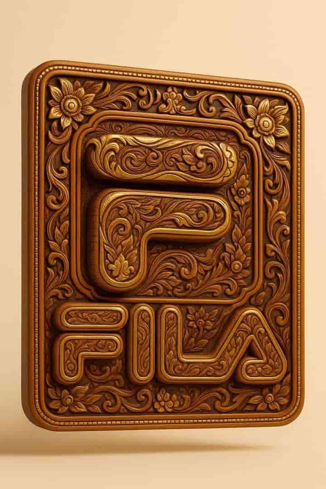

How to use this prompt
To use this prompt professionally, deploy it for logo sculptures, cultural redesigns, or artisan branding in design and heritage. Preserve "high-end hand-carved wooden sculpture," "inspired by Thai temple craftsmanship," "rich teakwood," and "soft ambient studio lighting" for luxury. Do not modify the gilded accents or neutral background. Changing patterns to "waves" could yield fluid visuals, leading to textures, while floral keeps intricate, cultural outcomes.
Prompt
Convert this image into a high-end hand-carved wooden sculpture style inspired by Thai temple craftsmanship. The entire design should look as if it is carved from rich teakwood with intricate details, subtle floral or ornamental patterns, and gilded accents in gold leaf.Maintain the original logo or shape but reinterpret it with elegant carved textures, engraved depth, and polished surfaces. Use soft ambient studio lighting to highlight the warm tones of the wood and gold, with a neutral background. The overall look should evoke luxury artisan craftsmanship and Thai cultural artistry.
Why this prompt works
This prompt will work because it transforms a logo into a hand-carved wooden sculpture with Thai temple craftsmanship the intricate details and gilded accents add cultural richness and luxury the soft ambient lighting enhances the warm tones making the image perfect for heritage branding artistic projects or promotions that require elegance and tradition.
Example Output
Here’s an example result generated with this exact prompt:
Prompt Variations
- Origin Style: Swap “inspired by Thai temple craftsmanship” → “inspired by Japanese temple craftsmanship” with dark lacquered wood. Swap “Thai” → “Gothic European” with stone and stained glass motifs.
- Material: Swap “rich teakwood” → “dark ebony wood” for a different color. Swap “teakwood” → “soapstone” for a different carving material.
- Accents: Swap “gilded accents in gold leaf” → “accented with mother of pearl inlay” for a different luxury material. Remove accents: “no gilding, only the natural wood” for a purer craft look.
- Accents: Swap “gilded accents in gold leaf” → “accented with mother of pearl inlay” for a different luxury material. Remove accents: “no gilding, only the natural wood” for a purer craft look.
FAQ
What is the intended inspiration for the carving style?It is inspired by Thai temple craftsmanship, specifically high-end hand-carved wooden sculpture.
What materials and accents are used?It should look carved from rich teakwood with gilded accents in gold leaf.